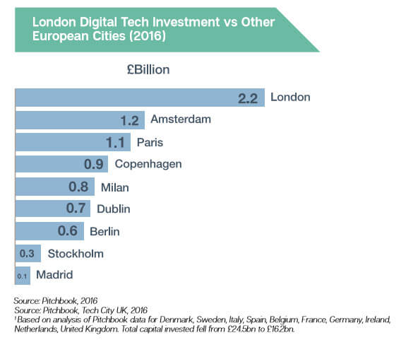
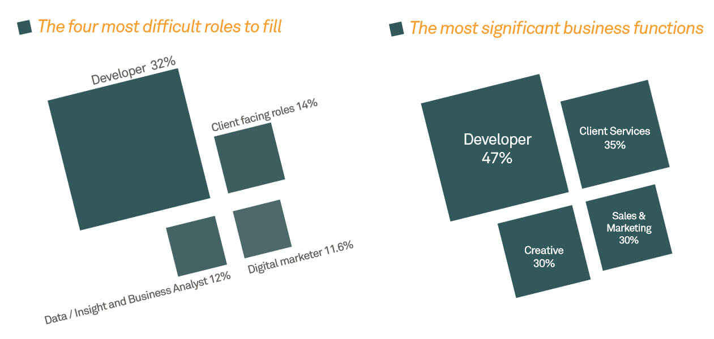
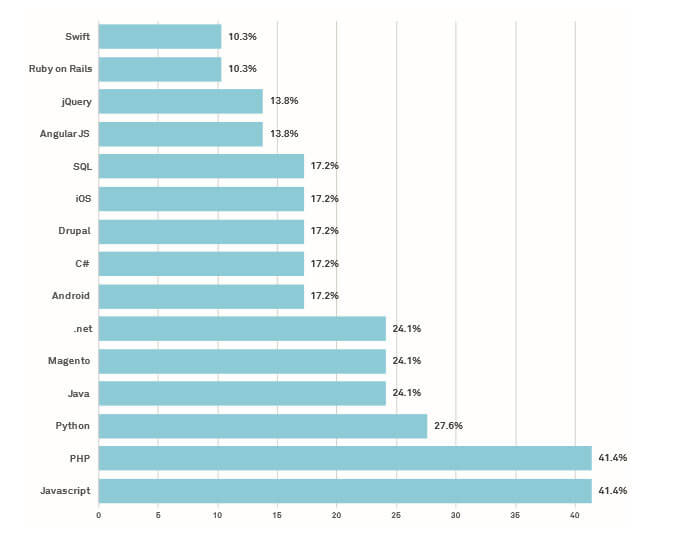

The Industry
The rise of the digital industry
The digital industry is surging in growth, becoming more accessible to everyone everywhere. People are making the move to digital mediums over hard copy. The digital industry is a place that never stops evolving, making a turnover of around 170 Billion in 2017. Where do I come into this? Well, this means there are more job opportunities in this industry.
How can this industry make such a turnover you ask? After reading Tech Nation 2017 report and Manchester Digital Skills Audit Report 2017 I stumbled on some interesting information on why the industry is booming. I'll break down this report and share the information with you.
A little bit about the industry
Within this industry, it has around 1.64 million digital tech jobs that are 85 thousand more from 2014-15. Not only does it have many jobs the average advertised salary in the UK is 44% higher than the national average. What fascinates me is that the UK invested more than the next 4 European countries combined in digital technology in 2016. As a result, leading to more jobs, interest and opportunities. The industry grew 50% faster than the economy in 2015 and if this doesn't speak volumes about this industry I’m not sure what will. Knowing this makes me pleased about getting into this industry and all the data I have seen indicates it will grow more. Why wouldn't you get up every day knowing you are learning, earning and making the industry better. But as the industry is growing so fast it can have its problems.
We get it, the industry is growing, what's the problem?
Developers, Well not literally. You would think this role was the easiest to fill because all you need to learn is code, right? 32% of developer jobs are not being filled this is very concerning as businesses said that the most important functions (47%) are done by developers. The main reason for this is businesses need more than a developer.
What are they looking for?
I can't say for definite what they are looking for but soft skills are one of them. An article about why only knowing coding isn't enough written by Yi-Jirr Chen (Head of Content at the developer platform Codementor.io) I read gave me a great insight into various different aspects of soft skills.
There are always developers that prefer a certain language to another this creates discrepancies, according to Manchester Digital skills audit report 41.4% of employers struggled to find developers that have a proficient understanding in PHP and JavaScript. I don't find this surprising as newer technologies are always just around the corner. It's mostly about adapting. This industry is one that you can't stay stagnant in.
Where do I fit in?
Just going into the industry for a well-paid job isn't enough, you need a burning passion to stay relevant. It's about adapting to certain business’s needs. After reading this Tech Nation report within my final year of university I will focus on better enhancing my JavaScript and PHP skills so I can meet the demand. Being taught soft skills from the start of college I already feel like I have had one up in the industry.
I briefly wanted to talk about how everyone loves frameworks. Don't get me wrong; I love doing less work as much as I love shaving milliseconds off the loading time for my users. As JavaScript is something I’ve been considering I’ve read many articles including Marco’s Vanilla JS vs Frameworks about loading times could be problems where developers slap a library onto a site with little care about optimization/implementation. In summary, vanillaJS is faster in certain situations. Yes, whilst we are only talking about milliseconds I believe the web should be equal to everyone no matter what the connection speed is.
My profound skills are in SCSS, HTML and CSS. I plan to learn javascript and PHP in depth expanding the knowledge I currently have as that is what is in demand. As for my future career path I don't want to limit myself to only web development, I do enjoy UX/UI and graphic design and would love to explore these options.
Conclusion
Overall, I’m looking forward to stepping into the industry as a Web Developer. Coming into the industry with a Manchester Metropolitan University Degree, I believe it’s given a broad range of skills needed for me to land a job as a front-end developer. However, I’m more excited to learn what leading developers and what I can do to improve on it.
Word Count: 761
Refrences:
Alka, M. (2016). Vanilla JavaScript vs. Frameworks & Libraries — Finding a good balance - Hashnode. [online] Hashnode. Available at: https://hashnode.com/post/vanilla-JavaScript-vs-frameworks-and-libraries-finding-a-good-balance-civ1zfus90pphdc53q8vtakz5 [Accessed 6 Oct. 2017].
Chen, Y. (2015). Why coding skills are not enough for a developer to get hired - JAXenter. [online] JAXenter. Available at: https://jaxenter.com/coding-skills-not-enough-developer-get-hired-121159.html [Accessed 5 Oct. 2017].
Manchesterdigital.com. (2017). Skills Audit Report 2017 | Manchester Digital. [online] Available at: https://www.manchesterdigital.com/skills-audit-report-2017 [Accessed 6 Oct. 2017].
Tech Nation 2017. (2017). Tech Nation 2017. [online] Available at: https://technation.techcityuk.com/ [Accessed 6 Oct. 2017].